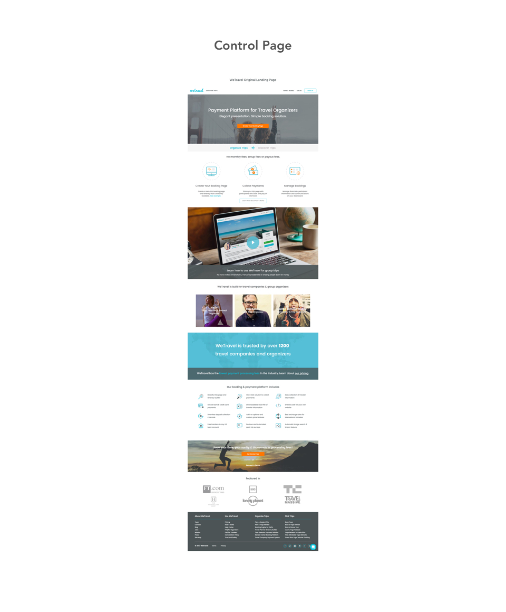

We Travel
A Messaging and UX Audit
Overview
WeTravel is an online trip planner and payment platform targeted towards semi-professionals, boutique agencies and DMCs (Destination Management Companies).
The Challenge
There are two main challenges to address: How to pivot focus from the marketplace to their payment platform feature and how to provide the right messaging to target the different groups that use their site?
My Role
Working in a team of 3 other UX designers, we were all closely involved in the end to end process of this project.
Skills
User Research | Wireframing | Card Sorting | Task Flow | Prototyping | Lo/Hi-Fidelity Design | Sketch
The Process
1. Research Phase
Our research phase consisted of user interviews, affinity mapping, card sorting, comprehension tests and competitor messaging analysis.
2. Experimentation Phase
During our experimentation phase, we started with testing the control, which is the original and current WeTravel website. Using the control as the basis for our changes, we began four cycles which consisted of:
For every cycle, we tested 5 new target users. With each cycle, we used the results from the previous one to create a new hypothesis in hopes of reaching our goal.
Landing Page
Control
For our control testing, we sought to understand who the users thought the site was targeted towards as well as gain insight into their thoughts about the landing and pricing page.

Observations
- Users were overwhelmed with site content
- Users thought the website was solely for yoga teachers or individual travelers
- Most users wanted to spend their first click on the "Discover Trip" link
Results
Only 1 out of 5 people correctly identified the target market.
Cycle 1
Using the observations from the control testing, we created a hypothesis as a basis for our Cycle 1 changes.
Hypothesis
If we focus messaging to match user values, then 80% of users will be able to identify the target market correctly.
Prototype
Observations
- Users were able to correctly identify the target market
- Users overlooked the video on the page mistaking it for a photo
- Users did not pay attention to the three main features at the bottom of the page
Results
Only 1 out of 5 users were ready to click on the pricing page from the landing page.
Cycle 2
Because we were successful with our first hypothesis, we created a new hypothesis for cycle 2 based on the pain points we observed from cycle 1. As a secondary goal, the founders expressed that they would like to get more users to click on the pricing page or “How it Works” page.
Hypothesis
If we emphasize the “How it Works” section, then 80% of users will feel confident enough to click on the pricing page
Prototype
Observations
- Users still expressed a need to know more before they felt ready to learn about pricing or to create a trip
- Users did not react well to the hero image and text
Results
Only 1 out of 5 users were ready to click on the pricing page from the landing page.
Cycle 3
From our observations in cycle 2, we concluded that if we emphasized the pricing, more users would want to go to the pricing page.
Hypothesis
If we de-emphasize “How it Works” and emphasize “Pricing”, 80% of users will want to go to the pricing page.
Prototype
Observations
- Users saw the features but didn't seem convinced on how they could benefit from WeTravel
- Users understood how it works, but were not sure if they would use the service
Results
Only 40% of users wanted to go to the pricing page as their first click
Cycle 4
We highlighted many of the features in cycle 3 but users were still not convinced. For cycle 4 we thought highlighting the benefits would improve things.
Hypothesis
If we emphasize user benefits, 80% of users will want to click on the pricing page.
Prototype
Observations
- Users wanted to watch the "How it Works" video and then click on pricing
- Users felt confident that it was easy to get more information
Results
60% of users wanted to go to the pricing page as their first click!
Takeaways
Although we did not reach our goal of 80% in the final cycle, we still felt success because the remaining 20% voiced that they wanted to go to the "How it Works" page first and review the pricing page afterwards.
Pricing Page
Control
Our goal was to make sure users understood WeTravel's pricing structure and could accurately calculate the cost of organizing a trip. We tested the original pricing page by asking users to explain the pricing through a simple task:
Explain the cost to use WeTravel if planning a trip for 5 people and the trip cost is $10 per person.
Observations
- Users didn't understand the 1% circle callout because it had no label
- Users didn't see or understand the 2.9% processing fee
- Users were unaware that the processing fee could be passed on to participants
Results
Only 1 out of 5 people were able to accurately explain and calculate the cost to use WeTravel.
Cycle 1
Using our findings from the control experiment, we created a hypothesis for the basis of our next changes.
Hypothesis
If we create a table to summarize the pricing options, then 80% of users will be able to correctly explain the cost to use WeTravel.
Prototype
Observations
- Users started to understand the 2.9% fee but with much effort
- Users still felt deceived with the "...just 1%" wording
- The table was confusing to some and wanted to see an example to explain each scenario
Results
2 out of 5 users accurately calculated the cost but with a lot of effort.
Cycle 2
Based on the feedback we received from users during cycle one, we created a new hypothesis.
Hypothesis
If we add a pricing example, then 80% of users can correctly explain the cost to use WeTravel.
Prototype
Observations
- Not many people clicked on the example
- However, the ones that did, felt the example was helpful
- Users were reading the table vertically and were confused when the percentages didn't add up.
Results
3 out of 5 users were able to accurately explain and calculate pricing
Cycle 3
From cycle 2, we realized that the pricing table was too confusing for most users. We decided to get rid of the table and think of a new way to display the pricing. In this cycle, we came up with three different prototypes and tested them with 7 people. Using the winning prototype, we created a new hypothesis.
Hypothesis
If we write out the pricing information, then 80% of users can correctly explain the cost to use WeTravel.
Prototype
Observations
- Users liked how linear the pricing information was
- Users felt it was "very clear and straightforward"
- Users stated it was a lot of text to read
Results
80% of users were able to understand the pricing!
Cycle 4
Because we met our goal, we thought we could fine tune it a little more and hopefully reach a 100% success rate.
Hypothesis
If we emphasize the benefit of passing the processing fee on, then 100% of users can correctly explain the cost to use WeTravel.
Prototype
Observations
- Users were confused about which fee to pass on (transaction fee or processing fee?)
- Users felt deceived by the "save more" wording
- Users did not like that the example was written out in words and preferred a visual representation
Results
60% of users understood the pricing
Takeaways
Because cycle 4 was less successful than cycle 3, we reverted back to cycle 3 for our final prototype.
Final Prototype: https://marvelapp.com/9d6085e